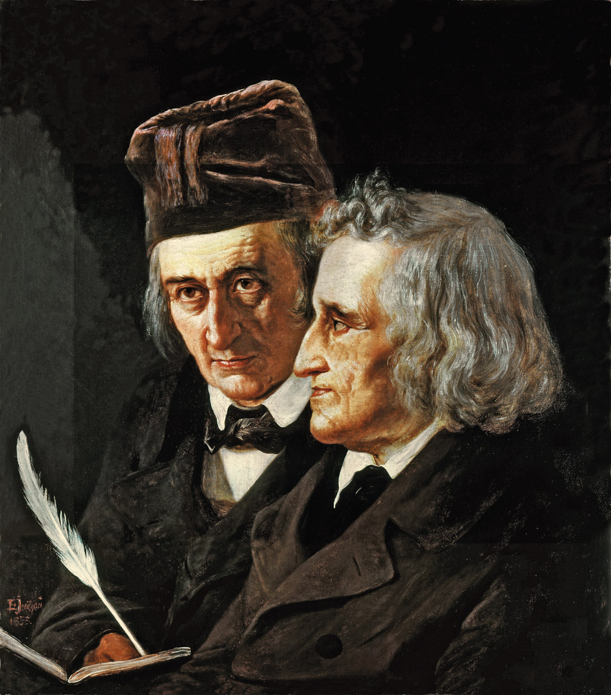

Bracia Grimm – Jacob Ludwig Karl Grimm i
Wilhelm Karl Grimm

Bracia Grimm – czyli Jacob Ludwig Karl Grimm i Wilhelm Karl Grimm – to niemieccy pisarze oraz uczeni. Obaj
byli językoznawcami oraz członkami Akademii Nauk w Berlinie.
Najwybitniejszym dziełem naukowym braci Grimm był Słownik niemiecki („Deutches Wörterbuch”), którego
publikację
rozpoczęli w 1852 roku. Dzieło to kontynuowane było przez następne pokolenia uczonych niemieckich, a jego
ostatni tom ukazał się w roku 1961.
Najbardziej znanym osiągnięciem braci Grimm jest niewątpliwie zebranie i opublikowanie baśni, które
opracowali
na podstawie wieloletnich badań, podań, mitów, a także opowieści ludowych. Baśnie braci Grimm zostały
przetłumaczone na wiele języków i stały się klasyką. Pierwsze wydania baśni cechowały się okrucieństwem,
które
w późniejszych wersjach znacznie złagodzono. Niemniej w każdej z wersji baśni panowało żelazne prawo moralne
–
dobro i przezorność zawsze zwyciężają zło oraz niegodziwość.
BRACIA GRIMM – TWÓRCZOŚĆ PISARZY W WYDAWNICTWIE MEDIA RODZINA
BRACIA GRIMM – TWÓRCZOŚĆ PISARZY
Nakładem wydawnictwa Media Rodzina ukazało się kilka wydań baśni Braci Grimm. Dwutomowa edycja „Baśnie dla
dzieci i dla domu”, czyli tak zwane wielkie wydanie zawiera 200 utworów i jest pełnym wydaniem baśni braci
Grimm.
W ofercie posiadamy także „Baśnie wybrane braci Grimm na podstawie II wydania z 1819 roku”. Jest to jedyna
wersja, która została opracowana na podstawie tak wczesnego wydania baśni. Dzięki temu są one nieskażone
późniejszym dydaktycznym podejściem i zachowują lekkość oraz lapidarność ludowego przekazu. Wymowę baśni
znakomicie podkreślają ilustracje Marcina Minora – barwne, mroczne, a jednocześnie pełne humoru.
Do wyboru mamy także zbiór pod tytułem Baśnie braci Grimm. Zawiera on 50 najbardziej znanych utworów, m.in. „O
wilku i siedmiu koźlątkach”, „Jaś i Małgosia”, „Kopciuszek”, „Czerwony Kapturek”, „Śpiąca królewna” czy
„Królewna Śnieżka”. Edycja ta dostępna jest również w wersji audio
(część 1,
część 2).
Autorką przekładu książek jest Eliza Pieciul-Karmińska. Dzięki jej tłumaczeniu, które zachowuje równowagę
między wiernością oryginałowi i tradycją (związaną z poprzednimi wydaniami), możemy po raz pierwszy zapoznać
się z baśniami wolnymi od nachalnego dydaktyzmu, jak również odartymi z patyny czasu.
Bajki
- „Żabi król”
- „O wilku i siedmiu koźlątkach”
- „Jaś i Małgosia”
Bajki powstające w obu wytwórniach to najwyższej klasy produkcje, które zachwycają widzów w każdym wieku!
Bracia Grimmowie zmierzali w nich do odtworzenia najstarszego wzorca motywów baśniowych, stąd charakterystyczne dla opowieści okrucieństwo. Niemniej w świecie tych baśni panowało żelazne prawo moralne – dobro i przezorność zwyciężają niegodziwość.
Najbardziej znanym ich osiągnięciem jest zebranie i opublikowanie baśni, które opracowali na podstawie wieloletnich badań podań, mitów i opowieści ludowych.
PYTANIA I ODPOWIEDZI – BRACIA GRIMM W WERSJI Q&A!
Dzieło to kontynuowane było przez następne pokolenia uczonych niemieckich, a jego ostatni tom ukazał się w 1961 roku.
-
Skąd pochodzą bracia Grimm? Gdzie urodzili się bracia Grimm?
- Bracia urodzili się w Hanau – niemieckiej miejscowości leżącej nad Menem. Z tego względu miasto
nazywane jest często Miastem braci Grimm (niem. Brüder-Grimm-Stadt). Miasto Hanau leży w Hesji, kraju
związkowym w zachodniej części Niemiec. Później mieszkali w Steinau, a także w Kassel, gdzie spędzili
najwięcej lat życia. Następnie przeprowadzili się do Getyngi. Koniec swojego życia obaj spędzili w
Berlinie.
-
Kiedy urodzili się bracia Grimm? Biografia w skrócie.
- Jacob Ludwig Karl Grimm urodził się 4 stycznia 1785, natomiast Wilhelm Karl Grimm przyszedł na świat
24 lutego 1786. Obaj byli z wykształcenia prawnikami, a pracowali jako bibliotekarze. Byli także
profesorami uniwersytetu w Getyndze. Jacob uznawany jest za twórcę germańskiego językoznawstwa
historyczno-porównawczego.
-
Jakie utwory pisali bracia Grimm?
- Bracia Grimm nie są autorami baśni, jednak odpowiadają za ich zebranie, zredagowanie, opracowanie
literackie, jak również opublikowanie. Baśnie powstały na bazie podań, mitów oraz ludowych opowieści.
Są oni natomiast autorami wspomnianego wcześniej „Słownika niemieckiego”. Co jeszcze, poza baśniami,
publikowali bracia Grimm? Bajki, a także legendy dla dzieci.
-
Gdzie studiowali bracia Grimm?
- Obaj bracia studiowali w Marburgu w Hesji. Należeli także do Berlińsko-Brandenburskiej Akademii Nauk
(dawniej nazywała się ona Pruską Akademią Nauk). Założona ona została 11 lipca 1700 roku. Jej
członkami byli także Albert Einstein, Max Planck i wiele innych znanych osobistości.
-
Ile baśni napisali bracia Grimm?
- Grimmowie napisali ponad dwieście baśni, a także dziesięć legend, które pojawiły się po raz pierwszy
w drugim tomie baśni (w wydaniu z 1819 roku).
-
Dlaczego bracia Grimm pisali baśnie?
- Grimmowie uważali, że historie te (a także ich przesłanie moralne) wywodzą się w sposób naturalny od
narodu niemieckiego. Chcieli je zachować, zanim wersje ustne tych opowieści zostaną utracone na
zawsze.
BRACIA GRIMM – CIEKAWOSTKI
Najbardziej znanym ich osiągnięciem jest zebranie i opublikowanie baśni, które opracowali na podstawie wieloletnich badań podań, mitów i opowieści ludowych.